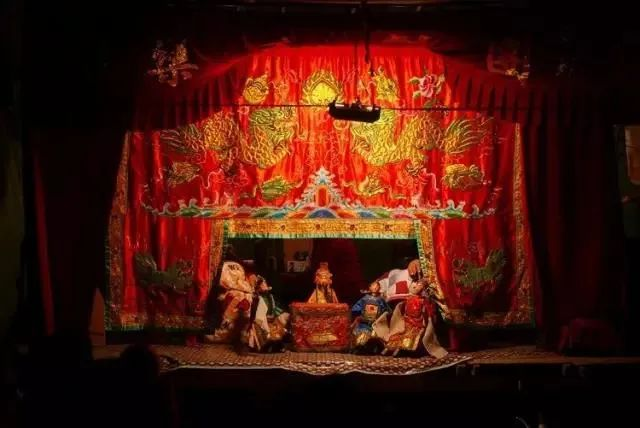
皮猴戏：
揭阳铁枝木偶是广东省揭阳市的传统戏剧艺术。虽形似木偶，其渊源却是民间的皮影戏。据萧遥天在《潮州戏剧音乐志》(已收入重刊饶宗颐总纂《潮州志》)的考证，潮州皮影戏属于南影的流派，在南宋接近灭亡时，由一班逃难的孤臣、义民将皮影戏带到南方来。有清一代，潮州皮影戏最盛行，民间称为"纸影戏"。因此，纸影戏在全国木偶戏中独一无二。后来，并台前罩的玻璃窗也弃去，号"阳窗纸影"，以别于"竹窗纸影"，民间便简称"纸影",本地喜欢称其为“皮猴戏”。
随着人们艺术欣赏时尚的改变，演出市场日益萎缩；木偶班大多为半农半艺，是松散形业余艺术团体，对木偶戏的研究传承具有一定难度，特别是一些高难表演技艺面临失传，必须采取有效措施加以保护、传承。
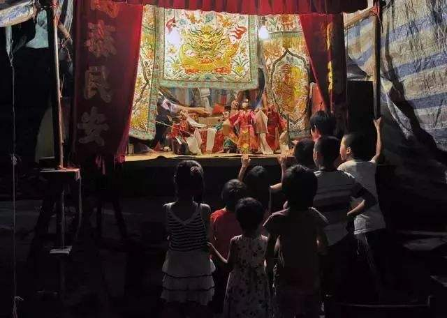
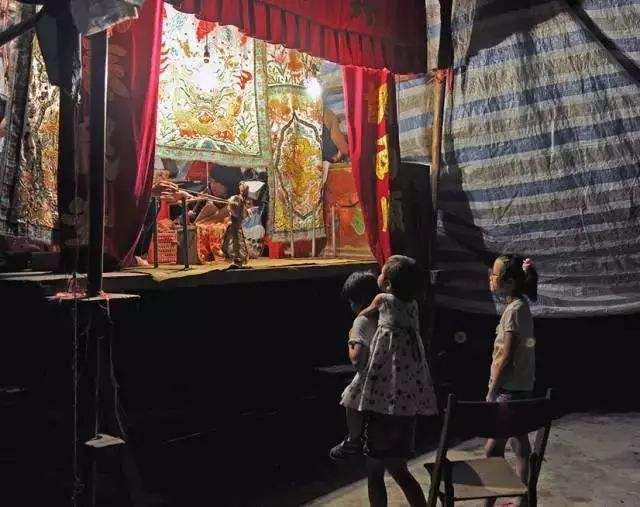
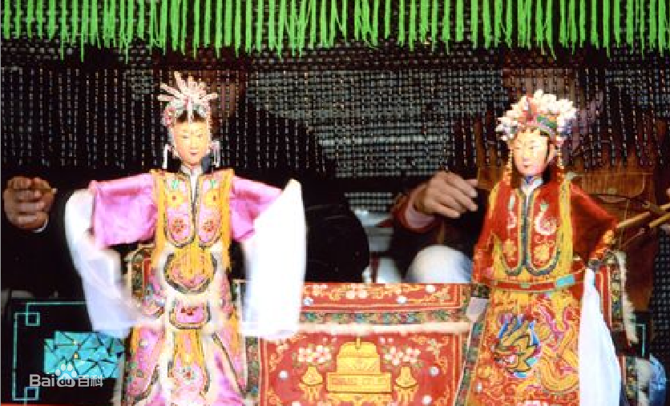
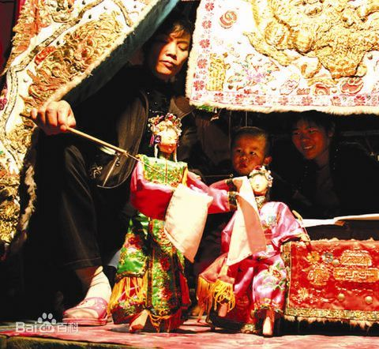
行彩桥：
“行彩桥”民俗主要流行于揭阳榕城。榕城作为原揭阳县治所在地，迄今已有800多年历史。由于榕江南北河夹城东流，城中河道纵横交错，有“水上莲花”的美誉，有水必有桥，所以城中桥梁甚多，因而民间便以“行彩桥”的形式开展娱乐活动，寄托祝愿。
。
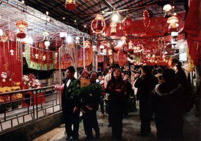
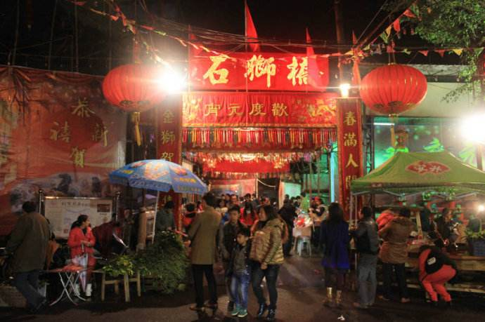
“行彩桥”是我们揭阳市民闹元宵的一项传统的民俗活动。节前，市区的大小桥梁均被彩灯、彩旗装扮一新，男女老少摩肩接踵，度桥祈福，热闹非凡，而在榕城区以石狮桥最为出名！彩桥如虹，行人如潮；花灯似海、夜空若昼。成千上万的市民在暖意融融的初春中感受盛世佳节所带来的喜庆气氛。“行彩桥”共分三阶段，正月十一“行头桥”，正月十五“行二桥”，正月十六“行尾桥”。
“行彩桥”已发展成榕城庆元宵一项独特的民俗文化活动，越来越吸引游人。“行彩桥”体现了人民群众喜迎新春，祈求新年幸福吉祥的美好愿望，创造了欢乐、轻忪、祥和的氛围，凝聚人气，增进乡谊，促进和谐。同时也是一项群众性的民间文化艺术活动，充分表现了人民群众的聪明才智和灵心巧手，是一项值得保留和发扬的民族传统文化活动。
行石狮桥、摸狮爷是这一天人们争相做的事，大家都希望能够祈求金狮爷保佑，也表达了对未来美好生活的祝愿！而摸狮爷也是意义非凡，狮爷的不同部位代表了不同的好彩头。
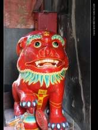
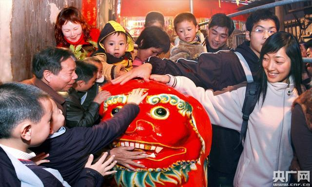
摸狮头，事事猴;摸狮耳，生阿弟;摸狮额，有好食;摸狮鼻，写雅字;摸狮嘴，大富贵;摸狮肚，娶雅亩;行桥中，嫁雅安.
迎老爷：
迎老爷是潮汕地区的民俗祭祀文化活动，潮汕人称神仙为老爷，本地民间是多神崇拜的，各村都有自己的神。每年年初，潮汕地区都有迎老爷的风俗。就是将神像从庙里请出来，到村子里游行，在一个地方举行拜祭仪式，然后再送回神庙安放。揭阳月城镇的篮头寨内村就在每年过年定时举行迎老爷活动，由村里的年轻小伙扛着老爷的轿子去到老爷宫迎出老爷然后再绕着村子进行游行。期间锣鼓喧天鞭炮齐鸣仿佛在宣示着老爷出行之威武。在大年十三开始请出老爷进行游行也会请锣鼓队与英歌队参与一起进行游行。
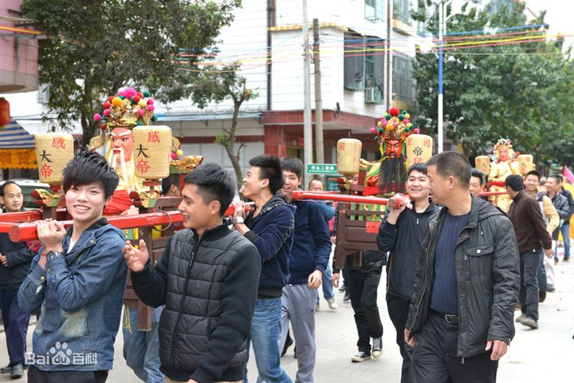
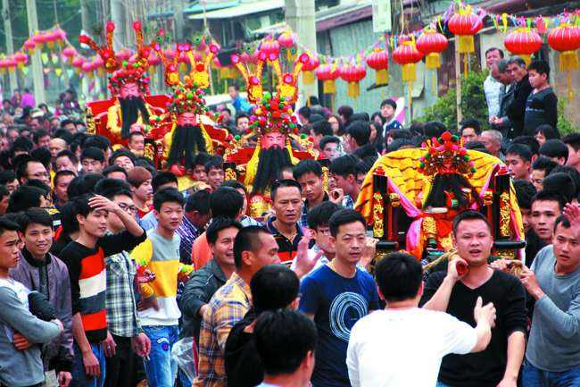
迎老爷游行虽然辛苦，却使得新一代的年轻人对家乡的传统文化有一个更贴近的体会，也是潮汕地区传统文化的一种传承。
由于近俩年疫情的影响，各个村子再没有举办营老爷活动，春节的气氛没有以往那么热闹了。
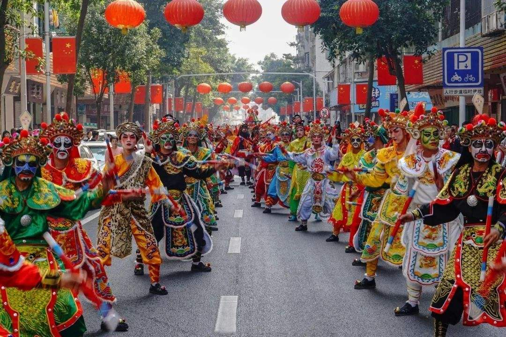
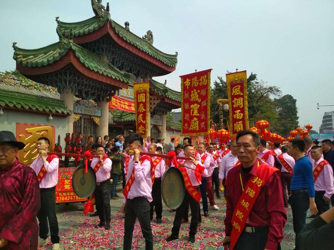
愿疫情能早日结束吧